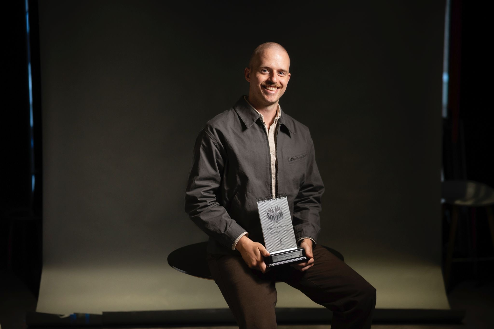

Hi, I'm Angus 👋, an award-winning health journalist based in London.
I write about changes in healthcare technology and systems, and how they affect those seeking care. My investigations have sparked inquiries and led to policy change.
Want to chat? Send me an email or reach me securely on Signal: @arthomson.01